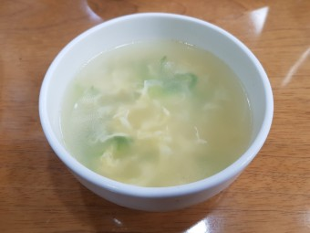

자취생을 위한 음식 레시피
홈
레시피
뒤로가기
계란국

재료
계란 3개
대파 한 줌
마른 멸치 4개
다진마늘 1/2 숟가락
소금
국간장
1. 물 600ml와 멸치를 냄비에 넣어 육수를 우린다.
2. 육수를 우리고 멸치를 건져준다.
3. 계란을 풀어 뭉치지 않게 넣는다.
4. 계란이 익으면 대파를 넣고 소금과 국간장으로 간을 맞춘다.
5. 참기름을 취향에 맞게 넣는다.
6. 맛있게 먹는다.